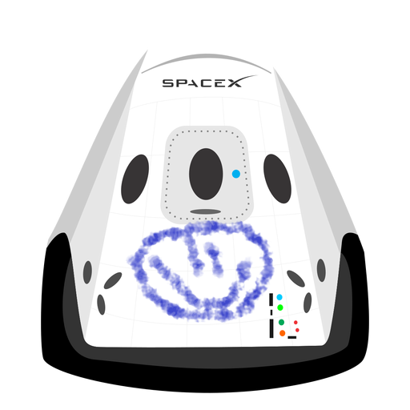

Hyperblog
Tu blog de cabecera
Aquí inicia la historia de un gran proyecto
Y este es el párrafo de inicio donde vamos a explicar las cosas increíbles que se pueden hacer con ramas

Los blogs son la mejor forma de compartir información y tus ideas mucho mejor que ir a conferencias o salir en Youtube. Excepto si eres Rockstar. Pero estadísticamente no lo eres... Por ahora.
Suscríbete y dale like